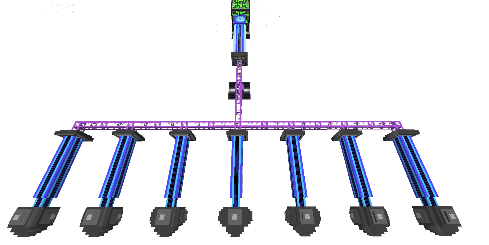

The first step to getting started in AE2 is to acquire Quartz. AE2 itself adds Certus Quartz Crystal, and makes use of vanilla's Nether Quartz as well. The first tier of AE2 tech, such as the , Certus Quartz Wrench, Certus Quartz Cutting Knife, and Certus Quartz tools, uses Certus Quartz as the primary crafting ingredient. The Certus Quartz Crystal can also be ground up in the Grindstone to produce Certus Quartz Dust (as can Nether Quartz), which is then used in Certus Glass (ingredient in most Tech 2 items), Tiny TNT (used in the creation of Singularities, a very advanced item in AE2), and most importantly to make Seeds.
Everything about AE2 is meant to be automated. Everything, right down to the aquisition of the most basic ingredients added by the mod. Seeds are one of the most important parts of the "early game" of AE2. By combining Certus Quartz Dust or Nether Quartz Dust (produced in the Grindstone or similar process in another mod) with Sand, you can create items called Seeds.
|
|
|
These Seeds, when placed in water, will grow into their respective crystal types. If you've looked carefully, you'll see that you get 2 seeds per 1 dust, this allows you to double your crystals for most uses in AE2. This growth is accelerated by (unsurprisingly) Crystal Growth Accelerator.
After some investigation, you've probably noticed that to move up through the tech tree you need Fluix Crystal. Fluix Crystals are made through two processes:
Alright, sounds simple enough. Just toss some of that Certus and Nether Quartz in some water with some of the Redstone you've undoubtedtly collected, and voila!
Nope, not gonna work. If you noticed the word "Charged" in front of "Certus" above, that's the reason. Fluix requires Charged Certus Quartz Crystal, not normal Certus Quartz Crystal. You can create Charged Certus Quartz Crystal in a Charger, which can be powered by a Vibration Chamber full of coal. But, hang on again; all that stuff requires Fluix, and we have none of that, and precious little of the Charged Certus (if you haven't noticed by now, some Charged Certus is available in the worldgen along with normal Certus). You'll also notice you can't create dust or seeds from the Charged Certus. Sucks, right? Only a little; since you need primarily uncharged Certus Quartz Crystal, Nether Quartz, and Fluix Crystal in the first stages of the mod, you can get away with making most of the Charged Certus into Fluix right away. Then, be sure to make some Fluix Seeds. After working so hard to find all that Charged Certus, you don't want to run out too soon!
It's going to take a while to grow the Fluix without any Accelerators handy. Don't worry, though; it's worth the wait. After growing some Fluix, make a Vibration Chamber and a Charger, and some Crystal Growth Accelerator, all the while being sure to keep your quartz and Fluix supply up using seeds and mining. After this, you're set to start on the next level of tech with an Inscriber.
No, AE2 isn't broken. The "final" pieces of the AE2 puzzle needed to move up the tech tree into ME Networks are the Inscriber Presses. There are four presses that you need (Listed in order of "tier"):
|
|
|
|
These presses are used to make the Circuits needed for the Tech 2 machines and beyond. They're found randomly in Sky Stone Chest, which are located within Meteorites. Meteorites are randomly spawned throughout the world, normally underground. So, the hunt begins!
This hunt is a little less aimless than the hunt for your first Charged Certus Quartz Crystal. You'll have a tool to help you on your way, the Meteorite Compass. The Compass will point you toward the chunk the meteor has generated in, not the specific block or the center of the meteor itself. You'll have to do some digging and searching in order to find the meteor, and then you'll have to take it apart and find the center, which is where the Sky Stone Chest will be located.
After this is where the fun starts. You now have all the tools to start making the complex pieces that Applied Energistics has to offer! Get out there and start filling up data drives.
Its pronounced Emm-Eee, and stands for Matter Energy.
Matter Energy is the main component of Applied Energistics 2, it's like a mad scientist version of a Multi-Block chest, and it can revolutionize your storage situation. ME is extremely different then other storage systems in Minecraft, and it might take a little out of the box thinking to get used to; but once you get started vast amounts of storage in tiny space, and multiple access terminals are just the tip of the iceberg of what becomes possible.
First, ME Stores items inside of other items, called Storage Cells; there are 4 tiers with ever increasing amounts of storage. In order to use a Storage Cell it must be placed inside either an ME Chest, or an ME Drive.
|
|
|
|
The ME Chest shows you the contents of the Cell as soon as its placed inside, and you can add and remove items from it as if it were a Chest, with the exception that the items are actually stored in the Storage cells, and not the ME Chest itself.
While the ME Chest is a great way to get introduced to the concept of ME, to really take advantage you need to set up an ME Network.
An ME Network is pretty easy to get started you need 2 things, an ME Chest / or ME Drive, and an ME Terminal ( or ME Crafting Terminal ) you'll also need some kind of cable, such as ME Glass Cable to attach the ME Terminal too.
Place all these next to each other, and you have the world's simplest network, storage and access.
You can add storage cells to the ME Drive, or use one in a ME Chest for storage, and access it all from the ME Terminal.
You might want to add more ME Terminal to other rooms, for this you'll want to make some ME Glass Cable, any ME Blocks attached to ME Glass Cable will be connected to the ME Network
So you have some basic storage, and access to that storage, its a good start, but you'll likely be looking to maybe automate some processing.
A great example of this is to place a ME Export Bus on the top of a furnace to dump in ores, and a ME Import Bus on the bottom of the furance to extract furnaced ores.
The ME Export Bus lets you export items from the network, into the attached inventory, while the ME Import Bus imports items from the attached inventory into the network.
At this point you probably getting close to 8 or so devices, once you hit 9 devices you'll have to start managing channels. Many devices but not all, require a channel to function. If the device deals solely with power, or connectivity like cables the device will not require a channel. Anything that uses items, or moves them around, will.
By default network can support 8 channels, once you break this limit, you'll have to add an ME Controller to your network. this allows you to expand your network greatly.
Each face of the controller will output 32 channels, depending on whats is accepting these channels will determin how they get used, for instance, if you place a ME Dense Cable next tohe controller you will beable to carry a full 32 channels, however if you place a ME Drive next to it, or non-dense cable, you will only get 8 channels.
So your getting things started, but getting channels where you want them is kinda a nusance. Its time to start using P2P Tunnels. These when configured for ME, allow you to move channels from point to point; this allows you to move up to 32 channels per pair of P2P Tunnel.

| Last modified on 08/20/2014 12:16 PM CDT By AlgorithmX2 |
|
|